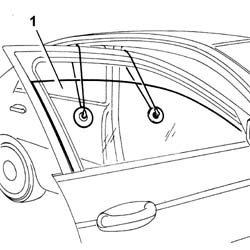
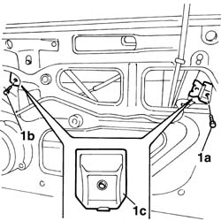
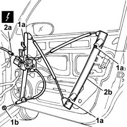

7005M20 Left or right front door electric WINDOW MOTOR - R.R. with door panel/support frame rmeoved.
- Path
- Procedures > 70 FITTINGS > 7005 passenger compartment front side doors > 7005M FRONT DOOR ELECTRIC WINDOWS > 7005M20 Left or right front door electric WINDOW MOTOR - R.R. with door panel/support frame rmeoved.
- Kind
- repair procedure (removal / refitting; the operation number is the code)
- Applies to
- all engines; all production periods
- Interactive page
- https://sloeber94.github.io/elrnDB-lThss/en/#/79931
Applies to: all engines; all production periods
 Removing
Removing
 Refitting
Refitting1. Lock the front side door descending window using a suitable tool.

Applies to: all engines; all production periods
- Undo the fixing bolts (1a) and (1b) and remove the window retaining brackets (1c).

Applies to: all engines; all production periods
1. Loosen the fixing nuts (1a) and remove the nuts (1b).
2. Disconnect the electrical connector (2a) and remove the electric window (2b).
 | Description | Connector |
|---|---|---|
2a | Right front electric window motor | N061 |

Applies to: all engines; all production periods
Refitting
Removing- Place the electric window in position.
- Connect the electrical connector and tighten the nuts fixing the electric window.
| Description | Connector |
|---|---|---|
. | Right front electric window motor | N061 |
1. Position the retaining brackets (1a) and then tighten the fixing bolts (1b).
Applies to: all engines; all production periods
- Release the descending window glass.
- Check that the electric windows are working properly and that the window glass slides without any impediments by opening and closing it several times.